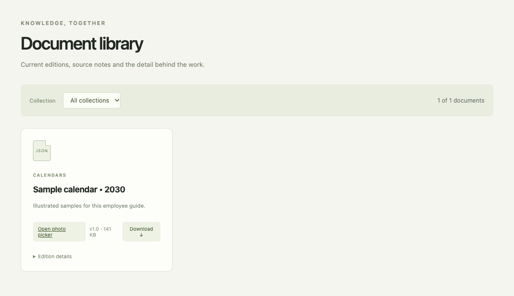
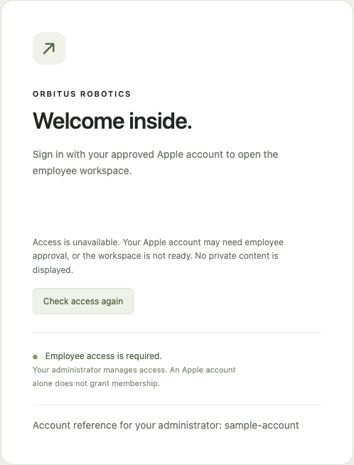
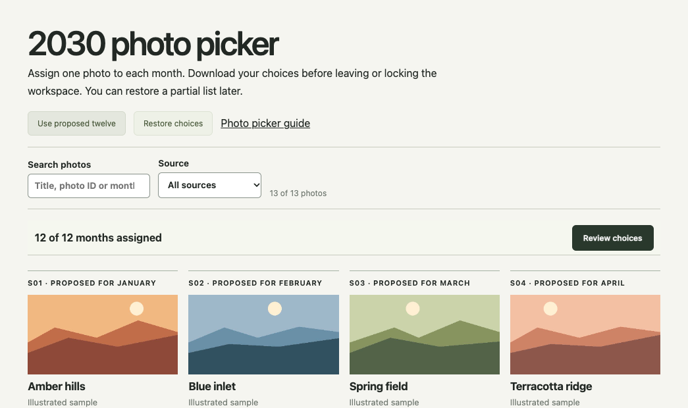
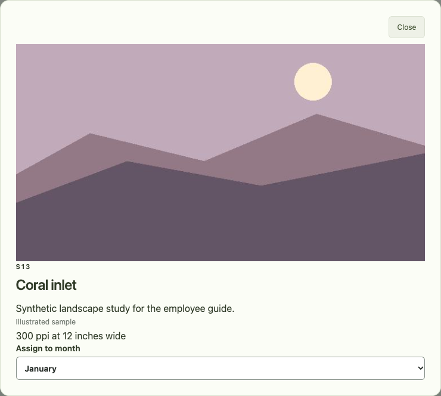
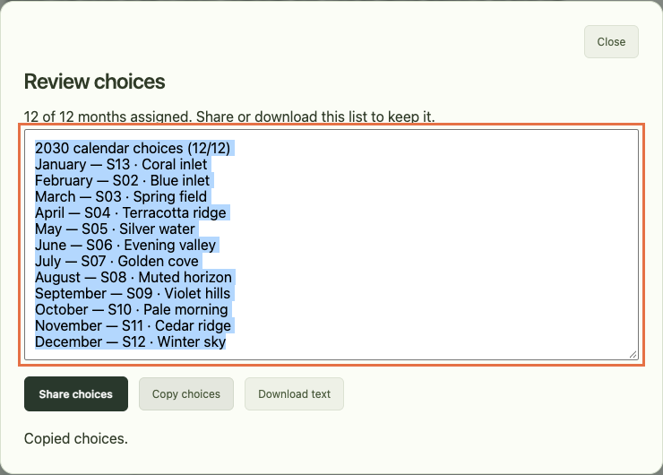
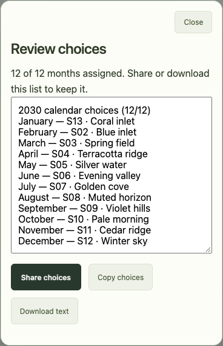
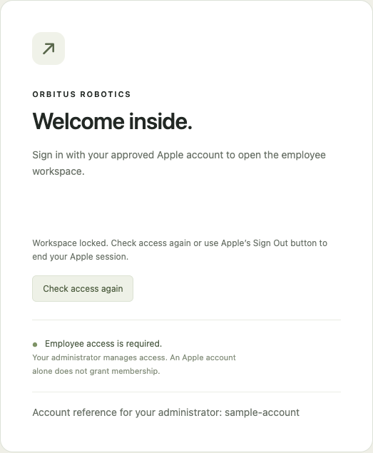

Choose your calendar photos
Assign one photograph to each month, then send your month-by-month list to the calendar editor. You can start on a computer and finish on a phone.
Edition 1 · November 27, 2026. Screenshots show the working interface with a synthetic account and illustrated sample photos. Select any image to enlarge it.
1. Open the photo picker
Follow the annual picker link in your browser and sign in with your approved Apple account. From the employee workspace, you can also choose Document library, find the calendar by year and select Open photo picker.

My account shows “Access is unavailable”
Confirm you used the intended Apple account. If your administrator needs to approve it, give them the account reference on the screen through your usual private channel. Once access is available, choose Check access again. A connection problem can also show this message.

2. Start with twelve, or choose individually
Use proposed twelve fills all twelve months with the editor’s suggestions. It also replaces any assignments already made. For a fresh selection, use the month menu on each photo instead. The counter updates as you go.
Use Search photos to find a title, ID or proposed month. The Source menu narrows the results. Your assigned photos stay selected while the filters are active.

3. Inspect a crop and change a month
Select a photo to enlarge its print crop. Check the subject and the resolution at 12 inches wide. Under Assign to month, choose a destination. Selecting a different photo for January replaces the previous January photo. Moving a photo from one month to another leaves its previous month open.
Select Close to return to the grid. In a card’s month menu, Choose month clears that assignment.

4. Review and send your list
Select Review choices. Check the IDs beside January through December and look for Unassigned. Select Copy choices and paste the list into your message to the editor. If your browser offers Share choices, choose the destination in the system share menu.
Download text saves a copy you can keep, including partial selections. The editor receives your choices when you send the list.

5. Continue on another device
Before leaving, select Review choices → Download text. Bring the saved text file to your other device, open the same year’s picker, sign in and select Restore choices. Choose the saved file. Check the counter and open Review choices to see the restored assignments.
If the file is rejected, check that it came from the same calendar year and still contains all twelve monthly lines. You can save again from the original session while it remains open.

My workspace locked before I finished
Locking, leaving the picker or ending the session clears the choices held in that page. After signing in or checking access again, reopen the picker. Use Restore choices with your saved text file or rebuild your selection.
